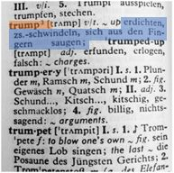

Dictionaries¶
In den letzten Übungen haben wir die wichtigsten Datentypen kennengelernt. Nun wollen wir ein besonderen Fokus auf den Datentyp Dictionary legen.
Ähnlich wie eine List, ist eine Dictionary ein Behälter wo mehrere Elemente abgespeichert werden können. Wie bei einem Wörterbuch bekommt jedes Element ein “Schlüsselwort”, mit dem man den Eintrag finden kann. Unter dem Eintrag “trump” findet man im Langenscheidt Wörterbuch (1977) die Erklärung “erdichten, schwindeln, sich aus den Fingern saugen”.

In Python würde man diese Dictionary folgendermassen erstellen:
langenscheidt = {"trump":"erdichten- schwindeln- sich aus den Fingern saugen"}
Schlüssel (von nun an mit Key bezeichnet) des Eintrages lautet “trump” und der dazugehörige Wert (Value) “erdichten- schwindeln- aus den Fingern saugen”. Beachte die geschweiften Klammern ({ und }) bei der Erstellung einer Dictionary.
Eine Dictionary besteht aber meistens nicht aus einem, sondern aus mehreren Einträgen: Diese werden Kommagetrennt aufgeführt.
langenscheidt = {"trump":"erdichten- schwindeln- sich aus den Fingern saugen", "trumpery":"Plunder- Ramsch- Schund"}
Der Clou der Dictionary ist, dass man nun einen Eintrag mittels dem Key aufrufen kann. Wenn wir also nun wissen wollen was “trump” heisst, ermitteln wir dies mit der nachstehenden Codezeile:
langenscheidt["trump"]
'erdichten- schwindeln- sich aus den Fingern saugen'
Übung 1: Dictionary erstellen¶
Erstelle eine Dictionary mit folgenden Einträgen: Vorname und Nachname von (d)einer Person. Weise diese Dictionary der Variable me zu.
Übung 2: Elemente aus Dictionary ansprechen¶
Rufe verschiedene Elemente aus der Dictionary via dem Key ab.
me["vorname"]
'Guido'
me["nachname"]
'van Rossum'
Übung 3: Key ergänzen¶
Um einer Dictionary mit einem weiteren Eintrag zu ergänzen, geht man sehr ähnlich vor wie beim Abrufen von Einträgen.
langenscheidt["trumpet"] = "trompete"
Ergänze gemäss nachstehendem Beispiel die Variable me durch den Eintrag groesse.
me["groesse"] = 181
Übung 4: Mehrere Values pro Key¶
Ein Key kann auch mehrere Einträge enthalten. An unserem Langenscheidts Beispiel: Das Wort “trump” ist zwar eindeutig, doch “trumpery” hat vier verschiedene Bedeutungen. In so einem Fall können wir einem Eintrag auch eine List von Werten zuweisen. Beachte die Eckigen Klammern und die Kommas, welche die Listeneinträge voneinander trennt.
langenscheidt["trumpery"] = ["Plunder- Ramsch- Schund",
"Gewäsch- Quatsch",
"Schund- Kitsch",
"billig- nichtssagend"]
langenscheidt["trumpery"]
['Plunder- Ramsch- Schund',
'Gewäsch- Quatsch',
'Schund- Kitsch',
'billig- nichtssagend']
len(langenscheidt["trumpery"])
4
Übung 5: Dictionary mit List¶
Erstelle eine neue Dictionary mit den gleichen Keys wie me, aber diesmal mit mehreren Einträgen pro Key (also mehreren Vornamen, Nachnamen usw.). Beachte, dass nun jeder Eintrag eine List sein muss. Weise diese Dictionary der Variabel people zu.